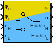

| Inports
| |
| phi_H | Estimated rotor angle from algorithm for high speeds |
| phi_L | Estimated rotor angle from algorithm for low speeds |
| n_H | Estimated rotor speed from algorithm for high speeds |
| n_L | Estimated rotor speed from algorithm for low speeds |
| Outports
| |
| phi | Used estimated rotor angle |
| n | Used estimated rotor speed |
| Enable_H | Enable estimator for high speeds |
| Enable_L | Enable estimator for low speeds |
| Mask Parameters | ||
| Name | ID | Description |
| thresh_up | 1 | Speed threshold for switching from low to high speed estimated values |
| thresh_down | 2 | Speed threshold for switching from high to low speed estimated values |
| n_max | 3 | Maximum (mechanical) speed (Only used for scaling in fixed point implementations) |
| ts_fact | 4 | Multiplication factor of base sampling time (in integer format) |
Implements switching policy between sensorless algorithms for low and high speeds. Decision base is the speed magnitude.
Handle with caution: it is implemented as a switch, so there is no soft transition.
| FiP16 | 16 Bit Fixed Point Implementation |
| FiP32 | 32 Bit Fixed Point Implementation |
| Float32 | 32 Bit Floating Point Implementation |
| Float64 | 64 Bit Floating Point Implementation |
16 Bit Fixed Point Implementation
| Inports Data Type
| |
| phi_H | int16 |
| phi_L | int16 |
| n_H | int16 |
| n_L | int16 |
| Outports Data Type
| |
| phi | int16 |
| n | int16 |
| Enable_H | bool |
| Enable_L | bool |
32 Bit Fixed Point Implementation
| Inports Data Type
| |
| phi_H | int32 |
| phi_L | int32 |
| n_H | int32 |
| n_L | int32 |
| Outports Data Type
| |
| phi | int32 |
| n | int32 |
| Enable_H | bool |
| Enable_L | bool |
32 Bit Floating Point Implementation
| Inports Data Type
| |
| phi_H | float32 |
| phi_L | float32 |
| n_H | float32 |
| n_L | float32 |
| Outports Data Type
| |
| phi | float32 |
| n | float32 |
| Enable_H | bool |
| Enable_L | bool |
64 Bit Floating Point Implementation
| Inports Data Type
| |
| phi_H | float64 |
| phi_L | float64 |
| n_H | float64 |
| n_L | float64 |
| Outports Data Type
| |
| phi | float64 |
| n | float64 |
| Enable_H | bool |
| Enable_L | bool |